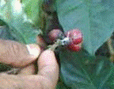
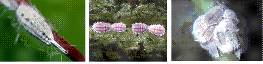

| Home |
| PEST OF COFFEE |
mAJOR PESTES |
| 1. White stem borer |
| 2. Red borer |
| 3. Shot hole borer |
| 4. Berry borer |
| 5. Green scale |
mINOR PESTES |
| 1. Mealy bug |
| Questions |
| Download Notes |
COFFEE :: MINOR :: MEALY BUG
6. Mealy bug: Ferrisia virgata, Planococcus lilacinus, P. citri (Pseudococcidae: Hemiptera)
Host range: Citrus, guava and mango
Damage symptoms
Mealy bugs infest tender branches, nodes, leaves, spikes, berries and roots in large numbers. Both nymphs and adults suck the sap. Young plants succumb to heavy infestation. Leaves become chlorotic, flower buds abort and berries become small if severely infested. A black fungus (sooty mould, Capnodium sp.) develops on the honeydew excreted by the bugs. Consequently, the leaves of infested plants become black, affecting photosynthesis.
Bionomics
They are small, soft bodied insects. Adult female is wingless. Oval body is clothed with mealy secretion in the form of small, white threads. Males are rare, small and winged. Reproduction is mainly through parthenogenesis. Female lay 100 to 1000 eggs. Eggs hatch in 3 days. The first instar nymphs crawl and settle in a place for feeding and secrete the mealy covering over the body. Nymphs are disseminated by wind also. There are three nymphal instars. Life cycle is completed in about a month. Mealy bugs multiply rapidly during hot weather with the cessation of monsoon. Nymphs and adults from the root zone migrate to the aerial parts, settle down, feed and reproduce. Intermittent showers and irrigation help in the build up of the pest. Excessive removal of shade in Robusta plantations often leads to flare up of mealy bugs.
|  | ||
Ferrisia vigata |
Planococcus lilacinus |
P. citri |
Management
- Spray 500 ml quinolphos 25 EC or fenitrothion 50EC in 750 L of water /ha